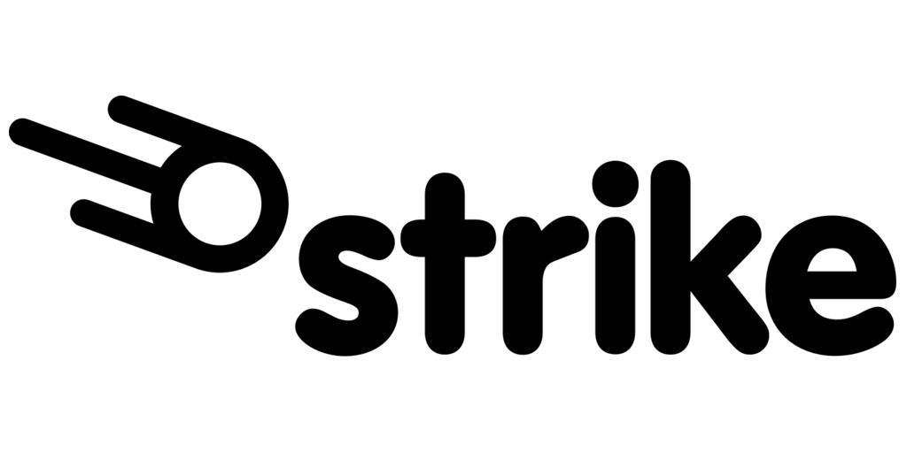

Current Bitcoin Price:
How To Buy Bitcoin
These are all referral links of mine. Click on the links to be automatically referred to the exchange. If you have a friend who already owns some, you could use their referral link.
When you buy $100, you get a bonus of $75 and so does the person that referred you

$30 for you, $30 for who referred you after your first trade of $20 or more
We each get $10 when you sign up and buy or trade with $100 or more within the first 30 days
This referral link will give you $5 off when you deposit and will also give me $5!
We each get $5 when you send $5 within 14 days of signing up
How to Store Bitcoin
- Trezor: Hardware Wallet
- Ledger: Hardware Wallet
- Exodus: Self Custody Online Wallet
- Coinbase Wallet: Self Custody Online Wallet
Hardware Wallets
Hardware wallets are a type of cryptocurrency wallet that store the user's private keys in a secure hardware device. They offer an additional layer of security by keeping the private keys separate from the internet-connected device. This makes them less vulnerable to cyber attacks and malware that can compromise the security of software wallets.
Some other reasons why someone might choose to use a hardware wallet include:
- Convenience: Hardware wallets are easy to use and allow the user to make transactions quickly and easily.
- Compatibility: Most hardware wallets are compatible with a wide range of devices and platforms, making them a flexible choice.
- Portability: Hardware wallets are small and portable, so they can be taken with the user on the go.
- Durability: Hardware wallets are designed to be durable and resistant to damage, so they can withstand the wear and tear of everyday use.
Overall, hardware wallets are a good choice for anyone who wants to store their cryptocurrency securely and have the convenience of being able to make transactions easily.
Online Self Custody Wallet
An online, self-hosted wallet (also known as a "hot wallet") is a cryptocurrency wallet that is accessed through a web browser and stored on a server that is connected to the internet. There are a few reasons why someone might choose to use an online, self-hosted wallet for their bitcoin:
- Accessibility: Online, self-hosted wallets are accessible from any device with an internet connection, making them convenient for users who need to access their wallet on the go.
- Ease of use: Online, self-hosted wallets are generally easier to set up and use compared to hardware wallets, which can be more technical to use.
- Integration with exchanges: Many online, self-hosted wallets are integrated with cryptocurrency exchanges, making it easy for users to buy and sell bitcoin directly from their wallet.
- Shared access: Online, self-hosted wallets can be accessed by multiple users, making them a good choice for businesses or organizations that need to share access to a bitcoin wallet.
It's important to note that online, self-hosted wallets are less secure than hardware wallets because they are connected to the internet and are at a higher risk of being hacked. They are also more vulnerable to malware and other cyber threats. As such, it is generally recommended that users only store small amounts of bitcoin in an online, self-hosted wallet and keep the majority of their holdings in a more secure wallet, such as a hardware wallet.
Leaving Bitcoin on an Exchange
There are both advantages and disadvantages to leaving bitcoin on an exchange. Here are a few of the main points to consider:
Advantages:
- Convenience: It is often easier and more convenient to leave bitcoin on an exchange, especially if the user is actively trading. This is because the exchange handles the security of the user's bitcoin and the user can easily access their funds to make trades.
- Integration with other services: Many exchanges offer additional services such as margin trading, lending, and staking, which can be convenient for users who want to take advantage of these features.
Disadvantages:
- Security risks: One of the main risks of leaving bitcoin on an exchange is the risk of the exchange being hacked or the user's account being compromised. While exchanges have taken steps to improve their security, they are still vulnerable to attacks, and users may lose their bitcoin if the exchange is hacked.
- Counterparty risk: When bitcoin is left on an exchange, the user is trusting the exchange to hold their funds securely. If the exchange goes bankrupt or experiences financial difficulties, the user may lose their bitcoin.
- Loss of control: When bitcoin is left on an exchange, the user does not have complete control over their funds. The exchange has the ability to freeze or seize the user's account, or change their terms of service, which could result in the user losing access to their bitcoin.
Overall, it is generally recommended that users only leave the amount of bitcoin on an exchange that they are actively trading and withdraw the rest to a more secure wallet, such as a hardware wallet. This helps to minimize the risks and ensure that the user has full control over their funds.